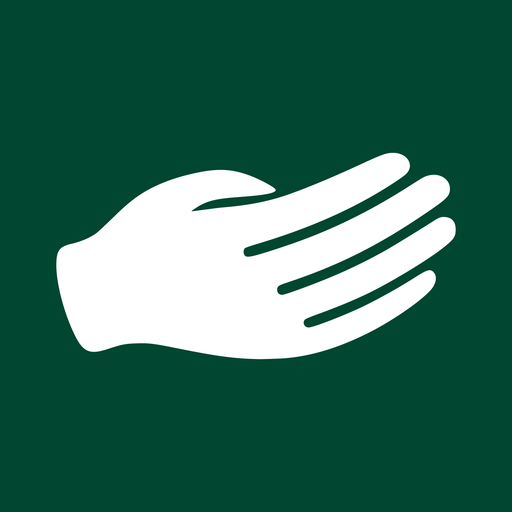
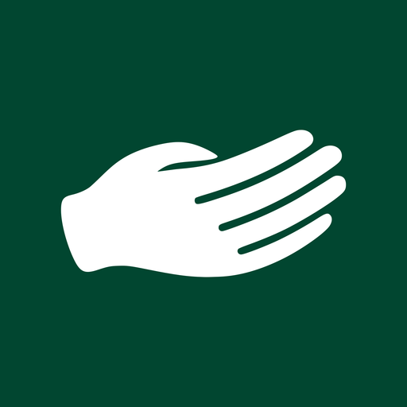
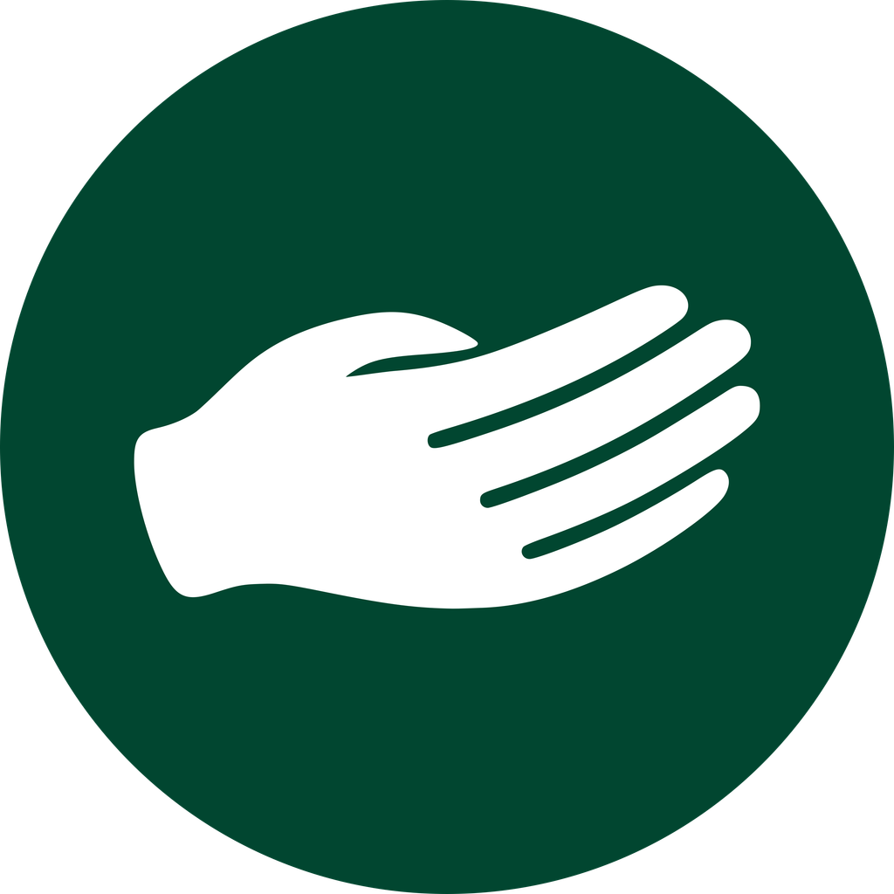

fatt APPost
Mano aperta originale · Sora SemiBold · Brand asset kit 1.0


Fondi chiari dell’appSVG trasparentePNG trasparente


Loghi orizzontali
Su verde scuroSVGPNG trasparente 3200


Su bianco e grigio fondoSVGPNG trasparente 3200


Icone, avatar e ritagli



Standard · Maskable circolare · Maskable arrotondata · Avatar
16 px
32 px
48 px
96 px
Condivisione e social


Post 1080 × 1080 · Story 1080 × 1920 · Banner 1584 × 396 · Anteprima repository 1280 × 640


Palette
Verde scuro
#014630Bianco
#FFFFFFMenta / APP
#9BF9A4Salvia / UI
#2F6B4FInchiostro / UI
#111827Geometria
Mano e wordmark sono allineati sui limiti visibili dei tracciati. L’intero ingombro è centrato nella tavola. Le icone maskable conservano la sagoma nel cerchio sicuro centrale.
Apri la verifica di centratura · Linee guida · Risultati dei controlli